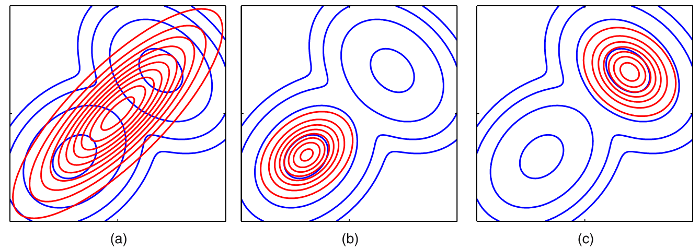

PRML.Ch10读书笔记：变分推理
0 疑问
这类概率推理问题在没有VB方法的时候都是怎么求解的？
- VB的直接好处是什么？
- 什么是平均场估计？
- 这里的估计方法和概率图中的BP的具体关系？
- VB中每一步的模型都是设定好的吗？例如LDA中使用Dirichlet作为后验概率？
- LDA中的VB是如何推导的？
1 引子
本文是PRML第10章部分内容的摘录和总结。在很多概率问题中，如果使用精确求解，那么问题规模与随机变量的个数是指数上升的。以主题模型LDA为例，每个词的生成对应一个随机变量，使用确定性的方法会导致问题规模为\(K^{NM}\)。现有的估计方法包括变分推导、随机模拟/采样、MCMC方法。其中变分推理是一个实现框架，具体而言有Loopy belief propagation方法和Mean field approximation方法。为了简单，以下VB即是说变分推理。
用最简单的话来讲，VB是说数据集中很多特性经过简单统计能反映原始参数的多少，每次迭代我们首先在E步对这些特性进行统计（实际上是求解充分统计量），之后，在M步看在这些统计结果的限制内，参数最可能是多少。这些特性可能是一些计数结果等，例如在LDA模型中，可能是属于不同主题的词的个数等等。有意思的是，在这个角度上VB方法与采样方法有着很大的相似点，唯一不同的是，VB方法每次迭代有明确的前进方向，而采样是靠数量取胜，从这里也能看出VB和采样的优势分别是速度和精度。
2 核心思想
变分推理的最终目的是要找到一个形式简单的分布Q，使得其能较好地估计形式复杂的真实分布P的取值。当我们指定一个Q之后，可以列出Q与P的关系： $$\ln{p(\bf{X})}=\mathcal{L}(q)+KL(q||p)\tag{1}$$ 其中， $$\mathcal{L}(q)=\int{q(Z)\ln{\frac{p(X,Z)}{q(Z)}}dZ}$$ $$KL(q||p)=-\int{q(Z)\ln{\frac{p{(Z|X)}}{q(Z)}}dZ}$$
这里我们使用KL散度描述P与Q的近似程度。KL散度是似然比的对数期望，它也是确定q之后p的混乱程度。另外，由于因为q与p不同分布时\(KL(p\vert\vert q) \neq KL(q\vert\vert p)\)，所以我们实际上面临\(KL(q\vert\vert p)\)和\(KL(p\vert\vert q)\)两个选择，实际情况是前者更为合理。如果我们能获得\(Z\)的解析形式的关系，那么参照EM方法中迭代求解隐变量的思路，即可求解隐变量的随机分布。VB与EM的最大区别在于VB中不再出现模型参数，取而代之的是随机变量。
2.1 为何使用\(KL(q\vert\vert p)\)

\(KL(q\vert\vert p)\)更倾向于使\(q\)去精确拟合\(p\)概率密度为0时的位置，这就导致对于分离的概率密度函数，\(q\)会产生一种聚集效果，即像后两个图一样拟合其中一个分离的分布，而不是像(a)一样试图拟合非0位置，这种行为叫做model-seeking。
2.2 分布Q的合理形式
这种合理形式叫做可分解分布，满足： $$q(Z)=\prod_{i=1}^{M} q_i(Z_i)$$
使用这种假设的好处是可将原始分布分解为多个较低维度的成分，可简化计算，这种方法在统计物理中被称为平均场方法。回顾公式(1)，我们的VB的最终目标是求一个Q，使得Q与P的KL距离最小，这等价于\(\mathcal{L}(q)\)的最大化。事实上，由(1)式可直接获得如下关系： $$\mathcal{L}(q)=\int{\ln{p(X,Z)}-\sum_{i}{\ln{q_i}}}\prod_{i}{q_i(x_i)}dZ$$ $$=\int q_{j}\ln{\tilde{p}(X,Z_j)dZ_j}-\int{q_j\ln q_j}dZ_j+\text{const}$$ 以上公式是为了获得\(q_j\)和其他\(q\)的关系，以析解得目标(1)的最优解。推导过程中注意积分变量和提出被积变量中的常量。回顾公式(1)，我们令KL散度直接为0使\(\mathcal{L}(q)=\ln(p)\)，可得以下公式：
$$\ln{q^\star_{j_{(\bf{Z_j})}}}=\mathbb{E}_{i\neq{j}}\ln{p(\bf{X},\bf{Z})}]+\text{const}\tag{2}$$
结论就是：为了估计随机变量\(q_j\)的分布，需要对其他所有随机变量的求期望，这样就极小化了KL散度，即使得Q与P更为接近。
3 实例
VB方法具有一个统一的推导求解框架，但对于不同的模型往往会有不同的insight，PRML中也从不同的方向进行了求解。
3.1 二元高斯模型
（待补充）
3.2 混合高斯模型
首先将GMM模型进行贝叶斯化，GMM的生成模型如下：
$$\alpha_0 \rightarrow \pi \rightarrow Z \rightarrow X \leftarrow \mu,\Lambda$$
其中，\(X\)为观测变量，大小为1xN；Z为每个观测变量在不同类别中的归属，使用01表示，大小为是KxN；\(\pi\)为不同类别的权重，大小为1xK；\(\alpha_0\)为决定\(\pi\)形态的超参数，大小为1xK；\(\mu\)和\(\Lambda\)本身为每个正态分量的均值和方差参数。其中，变量间的关系如下： $$p(X|Z,\mu,\Lambda)=\prod_{n=1}^N\prod_{k=1}^K\mathcal{N}(x_n|\mu_k,\Lambda_k^{-1})^{z_{nk}}$$ $$p(Z|\pi) = \prod_{n=1}^{N}\prod_{k=1}^K\pi_{k}^{z_{nk}}$$ $$p(\pi)=\text{Dir}(\pi|\alpha_0)=C(\alpha_0)\prod_{k=1}^K{\pi_k^{\alpha_0-1}}$$ $$p(\mu,\Lambda)=\prod_{k=1}^{K}{\mathcal{N}(\mu_k|m_0,(\beta_0\Lambda_kk)^{-1})\mathcal{W}(\Lambda_k|W_0,v_0)}$$
可以看出\(p(Z\vert\pi)\)是以\(\pi\)为参数的多项分布。\(p(\pi\vert\alpha_0)\)可使用Dirichlet分布进行描述，正态分布的参数可使用Gaussian-Wishart分布描述，因为他们分别是多项分布和高斯分布的先验共轭。
最终目标实际上是估计以上关系构成的联合分布\(p(X,Z,\pi,\mu,\Lambda)\)。我们使用2.2节中提到的可分解分布\(q(Z)q(\pi,\mu,\Lambda)\)对\(p\)进行估计。一种直观的方式是分解整个联合概率分布，以构造分布Q，如下： $$\ln q^\star(Z)=\mathbb{E}_{\pi,\mu,\Lambda}[\ln{p(X,Z,\pi,\mu,\Lambda)}] + \text{const}\tag{3}$$
将\(p\)的生成模型代入其中，直接将(3)展开，可得到一种分布分解的情况。 $$\ln q^\star(Z)=\sum_{n=1}^N\sum_{k=1}^K z_{nk} \ln{r_{nk}}$$
这里没有将\(r\)进行展开，其意义为Q函数中一个规范化后的\(q\)。观察到\(r\)的形式和我们想要的Q函数的形式一致，所以我们直接令\(\mathbb{E}[z_{nk}]= r_{nk}\)可得到VB的参数推导公式。但遗憾的是这种方法得到的结果与MLE是一致的，而事实证明MLE方法在对应GMM模型中有较为明显的缺陷，即从整个联合概率密度进行估计Q函数并不是一个好的方式。 一个更合适的方式是尝试将\(\ln{q^\star}(\pi,\mu,\Lambda)\)进行分布的分解。E步使用期望估计Q函数的形式，待估计函数的展开形式仍然如(3)所示，该步骤可产生关键的模型参数\(r_{nk}\)：
$$\mathbb{E}_{\mu_k,\Lambda_k}[(x_n-\mu_k)^T\Lambda_k(x_n-\mu_k)]=D\beta_k^{-1} + v_k(x_n-m_k)^TW_k(x_n-m_k)$$
$$\ln{\tilde\Lambda_k}=\mathbb{E}[\ln|\Lambda_k|]=\sum_{i=1}^D\psi(\frac{v_k+1-i}{2})+D\ln 2 +\ln|W_k|$$
$$\ln\tilde\pi_k=\mathbb{E}[\ln\pi_k]=\psi(\alpha_k)-\psi(\sum_k\alpha_k)$$
以上公式带入(3)中可获得： $$r_{nk}\propto \tilde\pi_k\tilde\Lambda_k^{1/2}\exp{-\frac{D}{2\beta_k}-\frac{v_k}{2}(x_n-m_k)^T W_k(x_n-m_k)}$$
M步更新原始模型，\(r_{nk}\)为计算原始模型的参数： $$q^\star(\pi)=\text{Dir}(\pi|\alpha)$$ $$q^\star(\mu_k,\Lambda_k)=\mathcal{N}(\mu_k|m_k,(\beta_k\Lambda_k)^{-1})\mathcal{W}(\Lambda_k|W_k,v_k)$$
其中， $$\beta_k=\beta_0+N_k$$ $$m_k=\frac{1}{\beta_k}(\beta_0 m_0 + N_k \bar{x}_k)$$ $$W_k^{-1}=W_0^{-1}+N_k S_k + \frac{\beta_0 N_k}{\beta_0+N_k}(\bar x_k - m_0)(\bar x_k - m_0)^T$$ $$v_k = v_0 + N_k$$
以上分布分解方法最终得到的Q函数计算结果与EM方法是一致的。
3.3 贝叶斯线性回归
（待补充）
4 参考文献
- 中文博客huajh7, Variational Bayes
- PRML读书会第十章
- C. Bishop, PRML Chapter10
- E. Xing, Probabilistic Graphical Models
- B. Matthew, PhD thesis